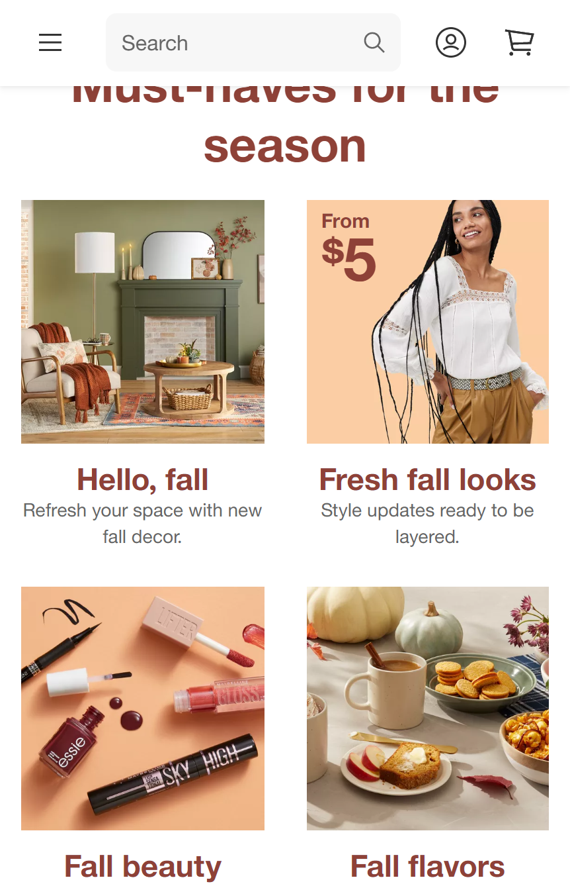

Repetition
Target
target.com In this example, Target.com groups the four images, not only through proximity, but through design as well. All the images associated with Fall in this screenshot, have a peachy/orange background color. All the bold text labeling these images have the same burgundy color as well. This repetetion of style and color across these images, let us know that they are associated with each other, and that they all lead us to Fall products when we click on them.
Rule of Thirds
H-E-B
heb.comThe Rule of Thirds states that humans tend to focus their eyes on an invisible 3x3 grid whenever they look at a picture. Therefore, marketers tend to place images, or other items of importance, along this invisible grid. In the mobile view, this image from the HEB webspage perfectly demonstrates the Rule of Thirds, by placing items like the bread, pumpkins, and call to action, along the vertical lines of the grid. As a result, our eyes are drawn to those areas.
Visual Hierarchy
Taco Bell
tacobell.comIn this screenshot, the Taco Bell webpage provides a good example of visual hierarchy. Visual hierarchy makes items of more importance bigger and more noticeable, so that our eyes will be drawn to those items first. When looking at the Taco Bell webpage, one of the first things we notice is the picture of the Mexican Pizza they are trying to sell. The second thing we notice is the words that tell us what it is (Mexican Pizza) and the call to action button that says ORDER NOW. Naturally, seeing the food first and then the ORDER NOW button, makes it more likely that viewer will place an order themselves, compared to if the webpage didn't have visual hierarchy.